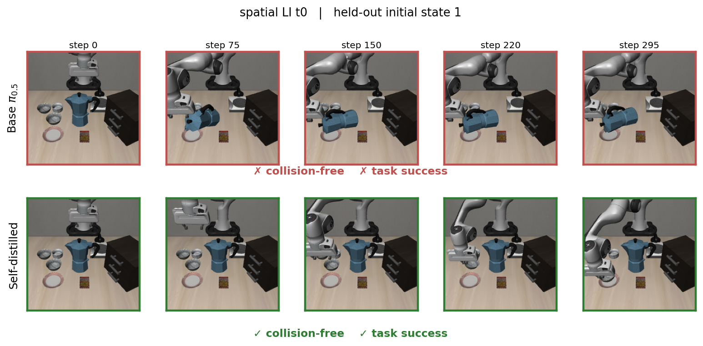
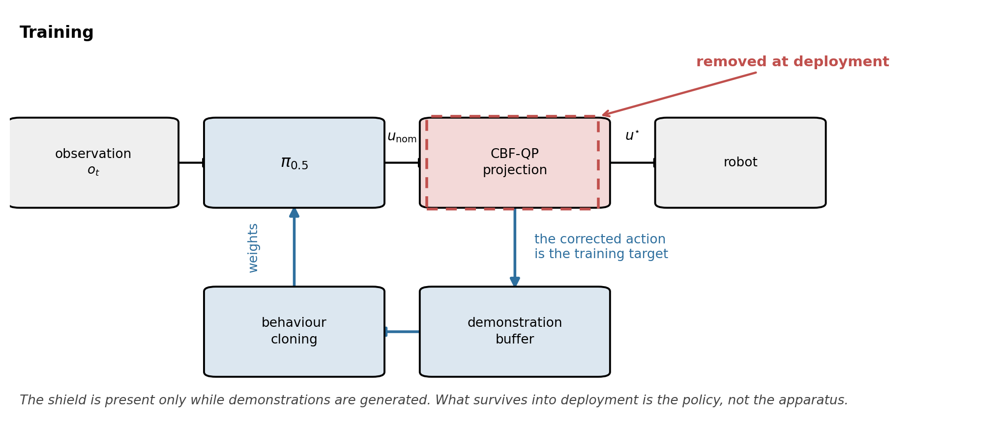
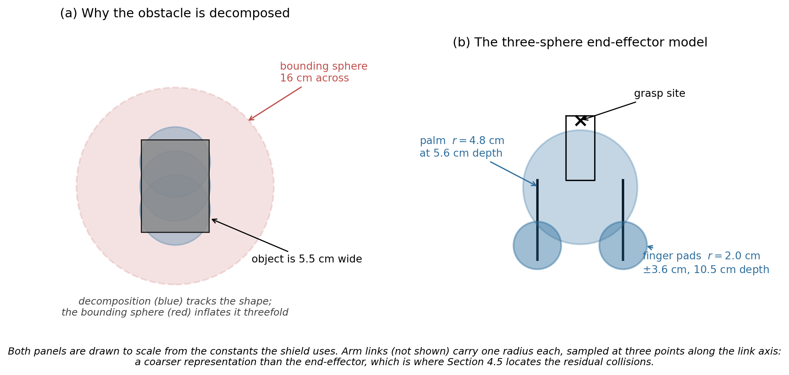
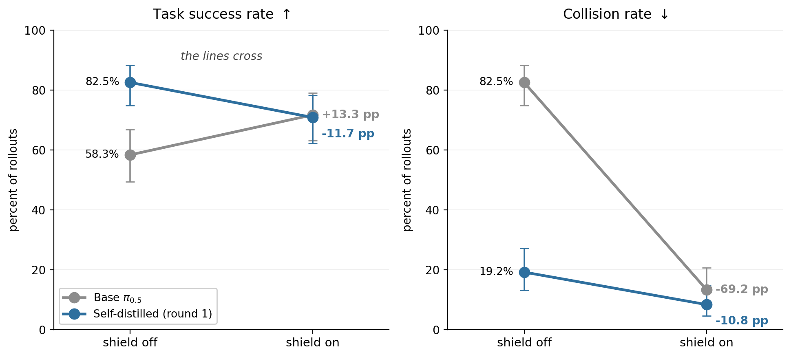
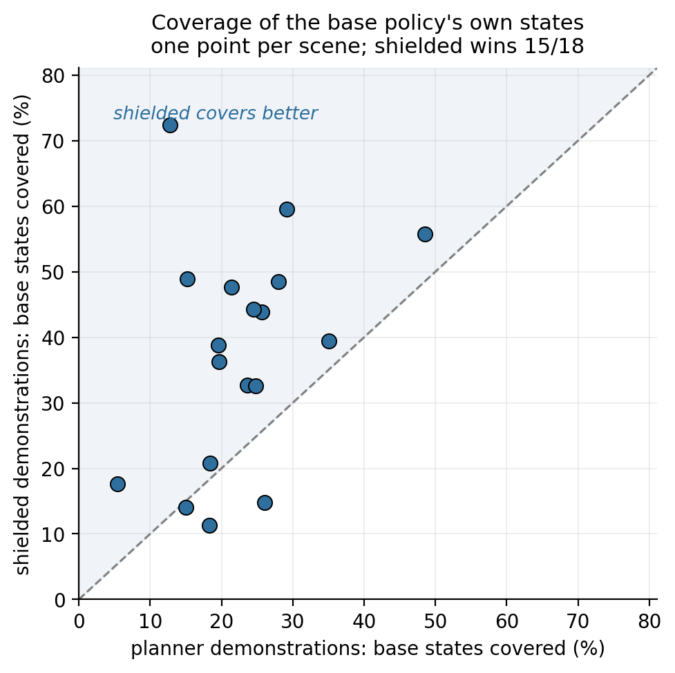

The short version
Vision-language-action models are competent manipulators and unsafe ones. On SafeLIBERO, the 3B-parameter policy π0.5 knocks a non-target obstacle out of place in 82.5% of episodes. The standard remedy is a control-barrier-function shield that projects every proposed action onto a safe set. It works — and it never leaves: it costs a quadratic program at every control step, it needs obstacle geometry at deployment, and it is one more component that can fail.
This thesis asks whether that corrective behaviour can be amortised into the weights instead. Roll the policy out with the shield attached, keep the episodes where the shield actually did something, behaviour-clone the policy on the corrected actions, then take the shield away.
One round of that leaves the policy colliding in 19.2% of held-out episodes with nothing running at inference, while task success rises from 58.3% to 82.5%. The transfer has a boundary, and mapping that boundary is the contribution: a geometry-privileged motion planner, supplying corrections of equal density under the same shield, transferred nothing at all.

Headline numbers
Self-distilled π0.5 after one round, against the undistilled base policy. Both evaluated with no shield at inference, on n = 120 held-out initial states pooled over 24 scenes.
Intervals are Wilson 95% score intervals — several conditions sit near zero, where the normal approximation is too narrow and can leave [0,1] entirely.
How it works

Build the barrier
The obstacle's collision mesh is read from the simulator, sampled into a point cloud and decomposed into a small set of spheres — a single bounding volume is a poor approximation of a non-convex object. The Franka hand gets three spheres (a 4.8 cm palm, two 2.0 cm finger pads); arm links three through seven get one each.
Shield at runtime
Each proposed translation is treated as a nominal end-effector velocity and projected onto the safe set by a three-variable quadratic program — the standard CBF-QP, one constraint row per sphere pair, solved with OSQP. When no constraint is active the action passes through untouched. Rotation is left free; the barrier acts on translation only.
Distil, then remove
Episodes are kept only if they succeeded, displaced nothing, and the shield fired at least once — a clean episode the shield never touched is ordinary base behaviour and teaches nothing. The retained corrected actions are behaviour-cloned through the policy's own flow-matching loss into a LoRA adapter on the action head, backbone frozen. Then the shield comes off.

The benchmark
SafeLIBERO augments the LIBERO manipulation suite with an obstacle placed in the workspace. The grid is three task suites (spatial, object, goal) × two obstacle levels × four tasks = 24 scenes, each with 50 randomised initial states. A simulated 7-DoF Franka Panda in MuJoCo, operational-space control, 224×224 agent-view and wrist images plus eight proprioceptive dimensions — and no joint angles, a fact the boundary result returns to.
Initial states 0–34 are used for collecting demonstrations and training; states 35–49 are held out and used only for evaluation. That split is load-bearing: a policy trained on shielded rollouts could in principle memorise those trajectories rather than acquire the behaviour behind them, and only unseen initial states tell the two apart.
Collision is recorded when the obstacle moves more than 1 mm from where it settled, in the ℓ1 sense, at any control step. The benchmark is due to Hu et al.'s VLSA / AEGIS work, which is also the runtime-shielding baseline this thesis measures itself against.
Does the safety internalise?
Yes — most of it, in a single round, and without paying for it in task performance.

| Policy | Shield | TSR (95% CI) | Collision (95% CI) | CAR | Shield act. | ETS |
|---|---|---|---|---|---|---|
| Base π0.5 | off | 58.3% [49.4, 66.8] | 82.5% [74.7, 88.3] | 17.5% | — | 138.6 |
| Base π0.5 | on | 71.7% [63.0, 79.0] | 13.3% [8.4, 20.6] | 86.7% | 0.355 | 160.6 |
| Self-distilled, round 1 | off | 82.5% [74.7, 88.3] | 19.2% [13.1, 27.1] | 80.8% | — | 157.3 |
| Self-distilled, round 1 | on | 70.8% [62.2, 78.2] | 8.3% [4.6, 14.7] | 91.7% | 0.177 | 170.0 |
| Self-distilled, round 2 | off | 80.8% [72.9, 86.9] | 17.5% [11.7, 25.3] | 82.5% | — | 158.8 |
| Self-distilled, round 2 | on | 72.5% [63.9, 79.7] | 9.2% [5.2, 15.7] | 90.8% | 0.182 | 176.7 |
Shield activation is the fraction of control steps on which the projection changed the action. ETS is the control step at which success first held, averaged over successful rollouts only, so it must be read alongside TSR. Most of the gain arrives in round 1; round 2 is a small consolidation.
Is it the shield, or just training on your own successes?
The demonstration filter tests three things at once — the shield fired, the episode succeeded, nothing was displaced — and that conflates two mechanisms. Under the first, the policy imitates the shield's avoidance corrections. Under the second, the gain is plain self-improvement from training on one's own successful episodes, for which the shield is incidental and the result a rediscovery of filtered behaviour cloning.
So a matched control was run: every variable held constant, the shield simply switched off during collection, same filter, same 85 demonstrations.
| Condition | Demos | TSR (95% CI) | Collision (95% CI) |
|---|---|---|---|
| Undistilled base | — | 58.3% [49.4, 66.8] | 82.5% [74.7, 88.3] |
| Control, shield off during collection | 85 | 50.0% [41.2, 58.8] | 84.2% [76.6, 89.6] |
| Matched, shield on during collection | 85 | 75.8% [67.4, 82.6] | 26.7% [19.6, 35.2] |
Success-filtering on its own does nothing here: the control ends up marginally worse than the policy it started from on both metrics. The shielded condition, at the same demonstration count and under the same filter, lands at 26.7% with a confidence interval disjoint from the control's. The activation rate corroborates it independently — a policy that merely succeeded more often would not need less safety intervention.
The control is not entirely inert, though. Its arm-link collisions fall from 17 to 6 while gripper collisions hold at 44, which is why the total does not move. Outcome selection transfers avoidance in the channel the barrier does not express, and leaves the channel that dominates the collision count alone.
Four things worth noticing
Distil before you shield
Shielding a distilled policy gives the highest collision avoidance measured anywhere in this work — 91.7% — at a success rate statistically indistinguishable from shielding the base policy. Where a safety case demands a runtime constraint anyway, a distilled policy is the better thing to attach it to.
The shield finds half as much to fix
Reattached to the distilled policy, the barrier alters 18% of control steps against 36% before. That is an independent check on internalisation, and it matters wherever motion must be predictable: a filter that fires constantly is a filter that makes cycle times vary.
Safe data is half the price
Collecting clean demonstrations yields 39% with the shield active against 18% without it — a direct saving for any deployment gathering task-specific data.
And it is not free
The distilled policy takes a more conservative route: execution time to success rises from 138.6 to 157.3 control steps, roughly 14% slower. A second distillation round buys nothing measurable on either metric — though it erodes nothing either, in contrast to an earlier DAgger-style attempt in this project that degraded across rounds.
The one place the two mechanisms fight
Combining them is not free. Attaching the shield raises the base policy's success and lowers the distilled policy's, while collisions fall in both cases — the reversal is confined to the success channel. When a policy already avoids the obstacle on its own, the projection perturbs actions that were already safe and competent, pushing it out of distribution. The VLSA authors independently name the same effect from the other direction, observing that enforcement can drive a policy where it “may behave erratically and fail to recover.” That the leading runtime-enforcement work reports the ceiling of runtime enforcement is the strongest available argument for internalising it instead.

Where it stops working
The interesting result is not that distillation works. It is the condition under which it works — and it is narrower than “safety can be learned.”
Replace the teacher. A sampling-based motion planner — RRT-Connect in joint space with clearance inflation, reading object and goal poses straight out of the scene specification — is more privileged than the policy, and its demonstrations were collected under the same shield, at matched gradient steps (16,140 against 15,988).
| Policy | TSR (95% CI) | Collision rate (95% CI) |
|---|---|---|
| Base π0.5, undistilled | 58.3% [49.4, 66.8] | 82.5% [74.7, 88.3] |
| Distilled on the privileged planner | 54.2% [45.3, 62.8] | 80.0% [72.0, 86.2] |
| Distilled on its own shielded rollouts | 82.5% [74.7, 88.3] | 19.2% [13.1, 27.1] |
The planner transferred nothing. Its confidence interval overlaps the undistilled base policy's on both metrics.
And the planner is not simply a weaker teacher
Run unshielded on spatial task 0 it collides in 5 of 8 episodes — arm links, gripper, held object, scene objects alike. Run shielded it collides in none. Its demonstrations depend on the shield to exactly the degree the policy's own do. The two sets are matched in correction signal and differ in where those corrections sit.

The shape of the difference is what you would expect from a scripted controller: it traces near-identical paths from a given initial condition, so its demonstrations form tight, near-deterministic bands, while the states the policy actually visits are diffuse and lie largely between and around them. The two distributions are not disjoint. The planner's density is simply concentrated where the policy is not.
An explanation that sounded right and was wrong
The intuitive story for the planner's failure is observation aliasing: π0.5 sees an image and eight proprioceptive dimensions but no joint angles, and a 7-DoF arm can place the end-effector identically with the elbow somewhere else entirely — so two training samples could look the same while carrying contradictory targets, and behaviour cloning would average them.
Measured directly from the demonstration files, at matched observation radius rather than matched neighbour count, the prediction comes out backwards. The planner's demonstrations are roughly twice as well determined by the observation at every radius. The teacher that fails to distil has the cleaner observation-to-action mapping; the teacher that succeeds is the more aliased of the two.
Two honest limits on the coverage explanation. It is measured on end-effector position — 3 of the 8 observed dimensions — so it says nothing about joint configuration. And it is descriptive, not causal: the matched comparison establishes that the source mattered, while the coverage figure proposes how the two sources differ.
What the shield cannot reach
Attributing every residual collision to the body that caused it makes the remaining failure legible. Across 360 shielded episodes the gripper displaced the obstacle zero times — the barrier's authority at the end-effector is essentially total. What survives is arm links and the held object, exactly where the sphere approximation is coarsest.
| Condition | Total | Gripper | Arm link | Held object |
|---|---|---|---|---|
| Base, no shield | 99 | 71 | 17 | 36 |
| Base + shield | 16 | 0 | 15 | 0 |
| Round 1, no shield | 23 | 7 | 13 | 9 |
| Round 1 + shield | 10 | 0 | 8 | 1 |
| Round 2, no shield | 21 | 8 | 8 | 7 |
| Round 2 + shield | 11 | 0 | 9 | 0 |
Rows count culprit bodies, not episodes, so a single episode with two contacting bodies appears twice.
Four things that did not work
Each was tested and rejected for an identified reason. None is a general claim about its method class, and the scope of each negative is stated with it.
| Mechanism | What was tested | Outcome | Scope of the negative |
|---|---|---|---|
| Scalar-reward RL | Flow-SDE GRPO on the action head — 4 configurations × 6 rounds, one scene, same trainable surface as the distillation. | Either collapses to inaction or learns nothing. No setting does both. | The reward design and budget tested. Not safe RL as a class — constrained-MDP and world-model methods supply richer signals. |
| Safety in language | One safety clause appended to the task instruction, n = 60 per condition, level II obstacles. | No safety change; 23% slower and 11.7 points less successful. | The single phrasing tested: generic, unnamed referent, manner adverbial. |
| Best-of-N selection | K ∈ {4, 8} candidate action chunks re-simulated per query, with exact state rewind. | No safe candidate exists on ~60% of queries; doubling K buys 8.8 points. | This policy and benchmark. The measurement it yields is the result. |
| Generative uncertainty as a monitor | Three statistics of the stored flow-denoising chain, scored as AUC for predicting whether an episode collided. | At chance for the base policy (0.461). The distilled policy inverts consistently (0.350, i.e. 0.65 flipped) — but on 23 collision episodes. | This policy, benchmark and episode-level prediction. The inversion is ~2 standard errors from chance and is reported as suggestive only. |
Best-of-N failing this way is itself a finding: within a given state, the safety outcomes of a VLA's sampled action candidates are near-perfectly correlated. That is why action-level rejection sampling cannot help where episode-level selection can.
Watch it
Every clip is base π0.5 on the left and the self-distilled policy on the right, on the same scene from the same held-out initial state, with the outcome burned into the header.
What this does and does not license
Two neighbouring claims would be false and are not made here. Learning safety from CBF-related supervision is not new, and distilling a corrective signal into a vision-language-action policy is not new either. What is new is the conjunction: a control-theoretic safety filter, distilled from a VLA's own shielded rollouts and evaluated with the filter removed, in the setting where runtime shielding is the current state of the art — and with it, the boundary condition.
That condition is narrower than the one it is easily mistaken for. Foreign teachers can transfer safety: SAFE-GIL clones an MPC or PID controller and IntervenGen replays human corrections, and both succeed because both take care that their demonstrations sit where the learner's errors would put it. The planner tested here received no such treatment. Supplying a foreign low-level controller under a matched comparison, and measuring what follows, is what this work contributes.
A runtime filter teaches a policy the regularities it observes and corrects, and those corrections amortise into weights without the per-step optimisation that comparable learned-barrier methods retain at inference. But the learned policy is only as broad as the states, hazards and geometry those corrections represent. Runtime shielding remains necessary outside that envelope. Distillation reduces dependence on the shield; it does not remove the need for a safety case.
Cite
@mastersthesis{rodriguez2026distilling,
title = {Distilling Runtime Safety into VLA Robot Policies},
author = {Rodriguez, Alex},
school = {University College London},
type = {{MSc} thesis, Robotics and Computation},
year = {2026},
}
The SafeLIBERO benchmark and the runtime-shielding baseline are due to Hu et al., VLSA: Vision-Language-Action Models with Plug-and-Play Safety Constraint Layer. The base policy is π0.5 (Physical Intelligence); the environment is LIBERO on robosuite / MuJoCo.